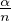

Poisson Distribution
A Derivation From Binomial Distribution
[PDF]
Poisson Distribution is one of the more complicated types of distribution. There are many ways for one to derive the formula for this distribution and here we will be presenting a simple one - derivation from the Binomial Distribution under certain conditions.
Let us recall the formula of the pmf of Binomial Distribution,
where 0 ≤ k ≤ n.
Before moving on, let’s imagine we have a period of time and we are finding the probability for an event to occur for some number of times. We do not know when or how frequent the event will happen. However, if we divide that entire period of time into n sufficiently small and identical time periods, we will be able to let the event to either occur once or not occure at all. So we no longer need to know the probability of the event from occuring but just the mean number over the time period. The problem is therefore transformed into a Binomial Distribution question with n being the total number of trials and we let α to be the mean of it. That gives us pn =  for the probability for the event to occur at nth time. The Binomial Distribution formula will be changed into
where 0 ≤ k ≤ n. For simplicity, the above equation will be denoted as bk(n).
In addition, we let n be a very big number that tends to infinity. At the same time, we will look at the case when k = 0 first.
Using Taylor Series ln(1 − x) = −∑ n=1∞xn∕n, we will get
When n →∞, the terms on the right, starting from the second one, will be equal to 0. By making both sides of the equation the power to e, we have

Moving on, we will compute the ratio of two bk(n) as the value of k differs by one, as n tends to infinity. We have
We now have all the necessary ‘ingredients’ to construct the Poisson Distribution. By using the ratio of two consecutive distribution and the value for b0(n), we have
where πk(α) represents the probability of the event to happen for k number of times with the average number of event occurance as α for a Poisson Distribution.
Thus, the Poisson Distribution is derived by setting the Binomial Distribution with the number of games as infinity and the let the probability of the outcome changes as the game plays on. Poisson Distribution, even though look unrealistic in the first sight, can be used to model a series of real life events, such as crime rate and rate of death for children. Also, this distribution will be involved for the construction of an interesting Stochastic Process, which we will be discussing in the future.